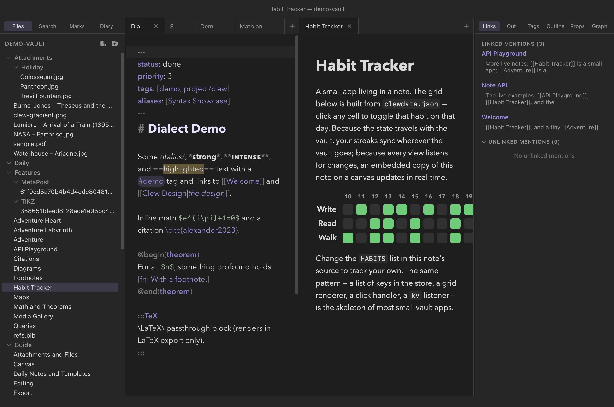

Extending Clew
The Note API
A <script> tag inside a note turns the rendered note
into a small application. When the Note API is enabled for a vault,
every script in a note runs in reading mode with a
window.clew object that talks to the app: it can read and
write notes, edit frontmatter, search, open tabs, run palette commands,
and keep shared state in a file that travels with the vault. A habit
tracker, a capture inbox, a dashboard, a text adventure — each is just
a note.
Enabling it (and why it is off)
The Note API is off by default in every vault. With it
on, opening a note runs that note's code — so the toggle is best
thought of as an install button: switch it on for vaults you wrote or
trust, leave it off for vaults you merely cloned. The switch lives in
Settings → This vault, labelled "Note
API: scripts in rendered notes may control Clew", and is stored
per vault as "noteApi": true in
.clew/vault-settings.json — which means the choice rides
with the vault folder, like everything else in .clew/.
(The demo vault ships with it on, so its example notes work out of the
box.)
The security model behind the toggle is worth knowing, because it is
what makes the feature reasonable at all. Rendered notes live in an
isolated preview origin with no Node.js and no filesystem access;
everything a script does goes as a message to a single dispatcher in
the app, which accepts only the explicitly whitelisted methods listed
in this chapter and tags every request with the path of the note it
came from. File methods touch only text formats
(.md, .jmd, .canvas,
.json, .txt, .csv,
.bib), and every path is validated against the vault. A
note script can never do more than Clew itself can do to your vault —
but with the gate on, it can do that much, which is why the gate
exists. When the gate is off, calls reject with a clear message rather
than failing silently.
A first application: the shared counter
The demo vault's API Playground note opens with the smallest complete example — a counter shared by every view of the note:
In the note (API Playground)
<div class="api-demo">
<button id="counter-dec">−</button>
<strong id="counter-value">…</strong>
<button id="counter-inc">+</button>
</div>
<script>
(async () => {
if (!window.clew) return; // exported HTML: stay static
const show = (v) => {
const el = document.getElementById('counter-value');
if (el) el.textContent = v ?? 0;
};
show(await clew.kv.get('playground:counter'));
clew.on('kv', ({ key, value }) => { if (key === 'playground:counter') show(value); });
document.addEventListener('click', async (e) => {
const delta = e.target.id === 'counter-inc' ? 1 : e.target.id === 'counter-dec' ? -1 : 0;
if (!delta) return;
const current = (await clew.kv.get('playground:counter')) ?? 0;
await clew.kv.set('playground:counter', current + delta);
});
})();
</script>Three things in those twenty lines are the whole discipline of writing note applications, and the rest of this chapter elaborates on each:
- The guard.
if (!window.clew) return;makes the note degrade to a static page wherever there is no app to talk to — most importantly on a published website. - State lives in the store, not in the DOM. The counter's value is a key in the vault's shared key-value store, so every open view of the note — a second pane, a canvas embed — shows the same number.
- Views react to changes. The
clew.on('kv', …)subscription fires in every open preview whenever any of them (or an external sync) changes the key. Click plus in one pane and the other pane updates the same instant.
The script lifecycle
Reading mode does not reload the page when a note changes; it patches the rendered DOM in place, which is what makes live previews feel instant. That has one important consequence for scripts: scripts run once per document load, and are never re-executed by an update. Your variables, timers, and closures survive while you type in the other pane — which is a gift — but any DOM your script decorated may be replaced under it by the next patch.
Two habits make this a non-issue:
- Bind clicks by delegation on
document, not on individual elements, and re-query elements inside handlers. A delegated listener survives any amount of DOM patching. Every example in the demo vault is written this way. - Re-render on the
renderevent. After each in-place update, the document fires aclew:renderDOM event, also surfaced asclew.on('render', fn). If your script builds DOM from state, call your build function there and it can never be stranded by an edit.
< character through unescaped, so a literal
script tag written inside a code example in a note opens a
real HTML element and can swallow the rest of the note. When a note's
prose needs to mention markup, name the tags in words (as the demo
vault's notes do) rather than typing them into code spans. This
applies only to authoring notes — actual script tags in the note body
are exactly how the feature is used.
The API, by group
Everything hangs off window.clew, and every method returns
a promise. Errors arrive as clean promise rejections. The full
signatures are in the reference table; this
section is the guided tour.
Context
clew.context() resolves to
{ path, vault, theme }: the calling note's own
vault-relative path, the vault's name, and the current theme
('dark' or 'light'). The path is how a script
can act on "this note" without hard-coding its location; the theme —
together with the theme event — lets a widget restyle
itself when the app switches appearance.
Reading the vault
clew.notes.list() returns every note path in the vault;
clew.notes.read(path) returns a file's text. For
structured questions, clew.index.get(path) returns the
note's entry in Clew's metadata cache — its headings, links, and tags,
already extracted, no parsing required — and
clew.index.backlinks(path) returns the notes that link to
it. clew.search(query) runs the vault's full-text search
with the complete operator syntax of the
search panel, resolving to matching paths
with line-level match snippets. Finally,
clew.properties.get(path) parses a note's frontmatter into
typed entries. The Playground's vault stats widget is the
pattern in miniature:
In the note (API Playground)
const paths = await clew.notes.list();
let links = 0;
const tags = new Set();
for (const path of paths) {
const meta = await clew.index.get(path);
links += meta?.links?.length ?? 0;
for (const t of meta?.tags ?? []) tags.add(t.tag);
}Writing the vault
clew.notes.write(path, content) replaces a file's contents
(creating the file if needed); clew.notes.append(path, text)
adds to the end, taking care of the trailing newline and creating the
file on first use; clew.notes.create(path, content) makes
a new note and resolves to the path actually created. The Playground's
quick capture box is one line of write:
In the note (API Playground)
await clew.notes.append('Inbox.md', `- ${stamp} — ${text}`);
clew.properties.set(path, key, value) edits a single
frontmatter property in place, preserving the rest; passing
null removes the key. It works on notes only, and it
refuses to touch frontmatter that uses YAML beyond Clew's editable
subset (the clean flag returned by
properties.get tells you in advance) — the same guarantee
that protects your frontmatter everywhere else in Clew, as described in
Properties and metadata.
Controlling the app
clew.open(target, opts) opens a note with full wikilink
semantics — 'Note', 'Note#Heading', an
attachment name, a canvas — creating the note if the name resolves to
nothing, exactly as clicking a wikilink would.
opts.newTab defaults to true; pass
false to reuse the current tab, and mode
('reading' or 'source') to force a view mode.
clew.command(id) runs any command the
command palette can run, by its
id — the Playground's "command deck" is nothing but buttons calling
clew.command('view:toggle-theme') and friends.
Shared state: the kv store
clew.kv.get / set / delete / list(prefix) is the heart of
most note applications. The backing file is
clewdata.json in the vault root — visible
on purpose, not hidden in .clew/, so that application
state travels when you share or sync the vault. Its behaviour is tuned
for exactly that life:
- Keys are written sorted and the file is tab-indented JSON, so it diffs and merges politely in git.
- Writes are debounced (about a third of a second), so a burst of updates costs one disk write.
- External edits flow back in. When sync, a
git pull, or your text editor changes the file, Clew reloads it and works out which keys actually changed. - Every change broadcasts. Each changed key fires
the
kvevent in every open preview and canvas embed — which is what makes the whole vault feel like one application. - Values must be JSON-safe, and setting a key to
nulldeletes it.
habit:2026-08-23, adventure:thread — and
use clew.kv.list('habit:') to fetch exactly your slice.
Every example in the demo vault follows this convention, and the
kv event handlers filter on the same prefix.
Worked example: the Habit Tracker
The demo vault's Habit Tracker note is the canonical shape of a vault application, small enough to read in full and complete enough to copy. It renders a fourteen-day grid of three habits; clicking a cell toggles that habit on that day, and because the state is in the kv store, an embedded copy of the note on a canvas updates in real time as you click.


clewdata.json;
clicking any cell writes through clew.kv.set.
The note holds a style block, one placeholder
<div id="habit-app">, and one script. The script's
state model is a key per day, holding the list of habits done that day.
Rendering starts by pulling the whole slice:
Habit Tracker — reading state
const HABITS = ['Write', 'Read', 'Walk'];
const DAYS = 14;
async function build() {
const stored = await clew.kv.list('habit:');
const doneOn = (day, habit) => (stored[`habit:${day}`] ?? []).includes(habit);
// … builds the table HTML from days × habits and sets
// document.getElementById('habit-app').innerHTML …
}
Every cell carries its coordinates as data attributes
(data-day, data-habit), so a single delegated
click handler serves the whole grid — no per-cell listeners to lose
when the DOM is patched:
Habit Tracker — writing state
document.addEventListener('click', async (e) => {
const { day, habit } = e.target.dataset;
if (!day || !habit) return;
const key = `habit:${day}`;
const current = (await clew.kv.get(key)) ?? [];
const next = current.includes(habit)
? current.filter((h) => h !== habit)
: [...current, habit];
await clew.kv.set(key, next.length ? next : null);
});
Note the last line's economy: a day with no habits left is deleted
outright (setting null removes the key), so
clewdata.json holds only days with content. And note what
the handler does not do: it never updates the DOM. Rendering
belongs to exactly one place — the subscription:
Habit Tracker — closing the loop
clew.on('kv', ({ key }) => { if (key.startsWith('habit:')) build(); });
build();
The click writes to the store; the store broadcasts; the broadcast
triggers the rebuild — in this view and every other view of the note
at once. This one-way loop (state → render, event → state) is the
skeleton of most small vault applications, from a counter to a
spaced-repetition system, and it is why the tracker needs no
synchronisation logic at all. To make it yours, edit the
HABITS array in the note's source.
The third worked example, the Adventure, pushes the idea to
its logical end: a tiny game whose rooms are three notes, whose
inventory is a pair of kv keys, and whose movement is
clew.open(target, { newTab: false, mode: 'reading' }) — so
play proceeds in a single rendered tab, each note a scene reading and
writing the same shared state. The vault is the program; the notes are
its rooms.
Where note scripts run
- Reading mode — the normal case.
- Canvas note embeds — a note dropped onto a
canvas is a live preview with the same API
and the same events, which makes a canvas of scripted notes a
dashboard. A script that answers Esc itself should call
e.preventDefault(): an Esc nothing in the note claims goes on to the canvas, and leaves the engaged card. - The published website — the scripts ship with
their pages, but there is no app behind them:
window.clewdoes not exist on a published site. A script that starts with theif (!window.clew) return;guard degrades into static content; a call made anyway rejects after a ten-second timeout rather than hanging forever.
Reference
The complete method surface. This list is exhaustive: the dispatcher in the app accepts exactly these methods and nothing else.
| Method | Resolves to | Behaviour |
|---|---|---|
clew.context() |
{ path, vault, theme } |
The calling note's vault-relative path, the vault name, and the current theme. |
clew.notes.list() |
string[] |
Every note path in the vault. |
clew.notes.read(path) |
string |
The file's text. Text files only (.md,
.jmd, .canvas, .json,
.txt, .csv, .bib). |
clew.notes.write(path, content) |
true |
Replaces the file's contents; creates the file if absent. Same text-file restriction. |
clew.notes.append(path, text) |
true |
Appends to the file, managing the newline between old and new content; creates the file on first use. |
clew.notes.create(path, content?) |
string |
Creates a note, optionally with initial content; resolves to the path actually created. |
clew.properties.get(path) |
{ present, clean, entries } |
Parses the note's frontmatter: whether a block is present,
whether it is within the editable subset, and its
{ key, value } entries. |
clew.properties.set(path, key, value) |
true |
Sets one frontmatter property, preserving the rest;
null removes the key. Notes only; refuses frontmatter
flagged not clean. |
clew.index.get(path) |
object | null |
The note's metadata-cache entry (headings, links, tags, …) as plain data. |
clew.index.backlinks(path) |
array |
The notes that link to the given note. |
clew.search(query) |
array |
Full-text search with the search panel's operator syntax; each result carries the matching path and line-level snippets. |
clew.open(target, opts?) |
true |
Opens with wikilink semantics ('Note#Heading'
included); creates missing notes. opts.newTab defaults
to true; opts.mode is
'reading' or 'source'. |
clew.command(id) |
command result | Runs any palette command by id. |
clew.kv.get(key) |
value | The stored value, or null when absent. |
clew.kv.set(key, value) |
value | Stores a JSON-safe value; null or
undefined deletes the key. |
clew.kv.delete(key) |
null |
Removes the key. |
clew.kv.list(prefix?) |
object |
All entries whose keys start with prefix
('' for everything), keys sorted. |
clew.on(name, fn) |
unsubscribe function | Subscribes to an event (below); calling the returned function unsubscribes. |
clew.call(method, params?) |
method result | The raw RPC form every helper above wraps. |
| Event | Payload | Fires |
|---|---|---|
kv | { key, value } |
Once per changed key, in every open preview and canvas embed —
local writes and external file changes alike (value is
null for a deletion). |
render | {} |
After each in-place re-render of the note (also available as
the clew:render DOM event). |
theme | { theme } |
When the app switches between dark and light. |
See also
- Vault plugins — the vault-wide extension mechanism; the Note API is the in-note one, and they compose.
- Publishing as a website — what becomes of scripted notes on a static site.
- Properties and metadata — the
frontmatter model behind
properties.getandproperties.set. - The canvas — live note embeds, which carry the full API.
- Queries — the declarative way to build views over the vault, no script required.